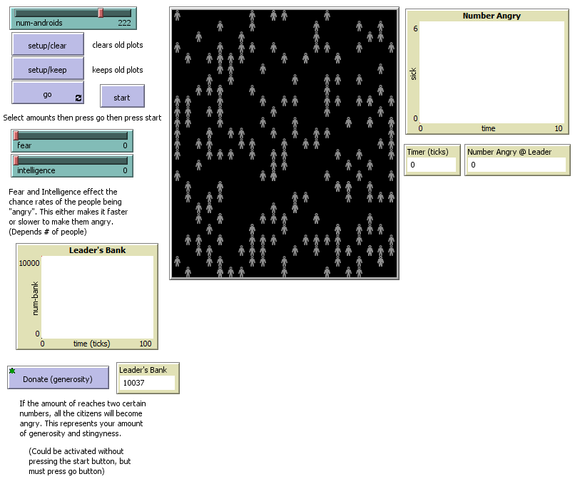

Info: 4.2.3 NetLogo Project - Machiavelli Leader
The original NetLogo simulation was Disease Solo.
I worked on this project with Nicholas Chib. This file includes the Machiavelli pdf, NetLogo file reworked, pre-planning document, and more.
This project's goal was to make a simulation based of the qualities Machiavelli believes to make a good leader.